СкладDrive для Windows
Архив portable-версии программы для простого учета склада, запчастей, работ и сервисных операций доступен через OneDrive.
Скачать программуPortable-программа для Windows
Простой учет склада, запчастей, работ и сервиса для СТО: остатки, приход, списание, доска работ, статистика, инвентаризация и резервные копии без лишней бухгалтерии.
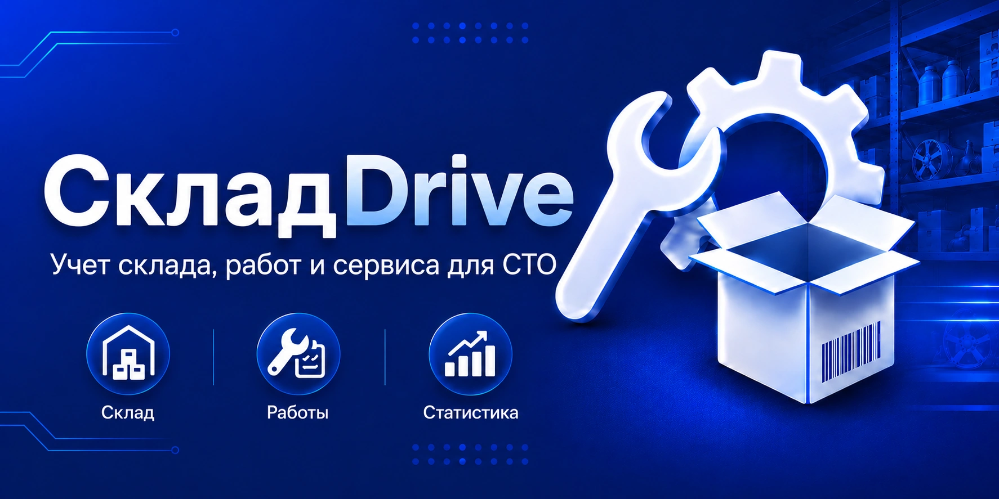
Зачем это сделано
СкладDrive сделан для обычных пользователей: открыл программу и работаешь без сложной бухгалтерии, лишних документов и перегруженных форм. В одном portable-приложении можно вести склад запчастей, принимать и списывать товар, смотреть журнал операций, вести доску работ, сверять остатки через инвентаризацию и быстро находить нужные позиции.
Программа не требует установки. Её удобно распаковать в любую папку. Для резервных копий выбирайте папку, которая синхронизируется с облаком — тогда при поломке компьютера вы не потеряете базу данных.
Лицензия на 1 год — 600 ₽.
По вопросам получения лицензии напишите на электронную почту.
skladdrive@mail.ruВнимание: все сообщения обрабатываю лично, ответ может занять время.
Галерея
Склад, поступления, списания, журнал, доска работ, статистика, инвентаризация, справочник и сервис. Нажмите на скриншот, чтобы открыть его в полном размере.
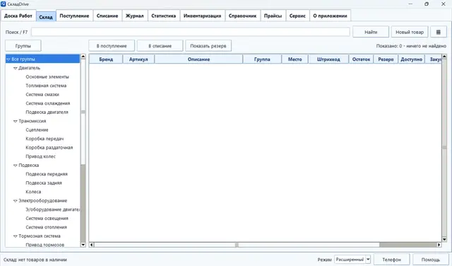
Быстрый поиск, группы, остатки, резерв и основные действия с товаром.
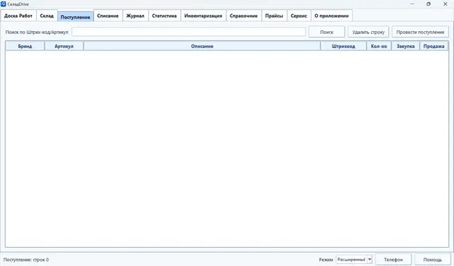
Полная панель разделов: журнал, доска работ, статистика, справочник и сервис.
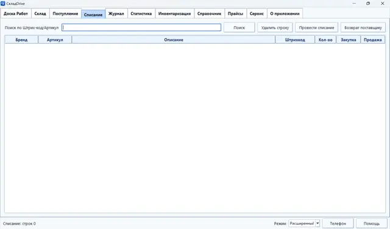
Добавление товара по штрихкоду или артикулу, карточка товара и проведение прихода.
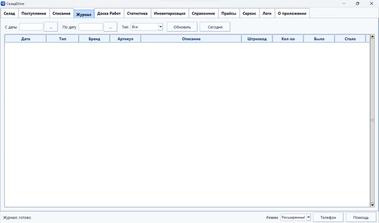
Поиск позиции, списание со склада и возврат поставщику.
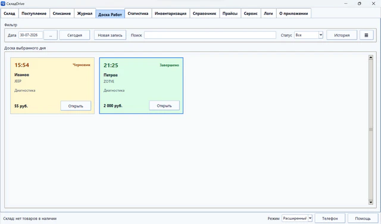
Заявки по времени, клиенту, автомобилю, описанию работ, сумме и статусу.
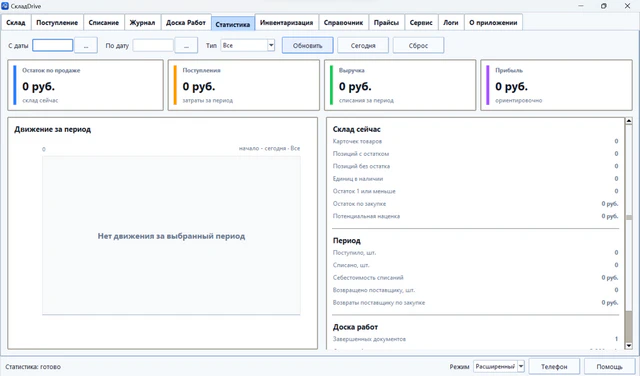
Показатели склада, продаж, прибыли, движения за период и динамики работ.
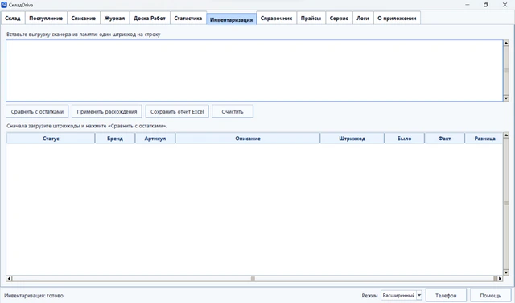
Сверка выгрузки сканера с остатками и применение найденных расхождений.
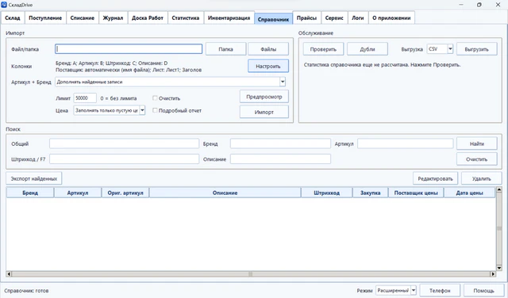
Импорт, настройка колонок, поиск, карточка товара и обслуживание базы.
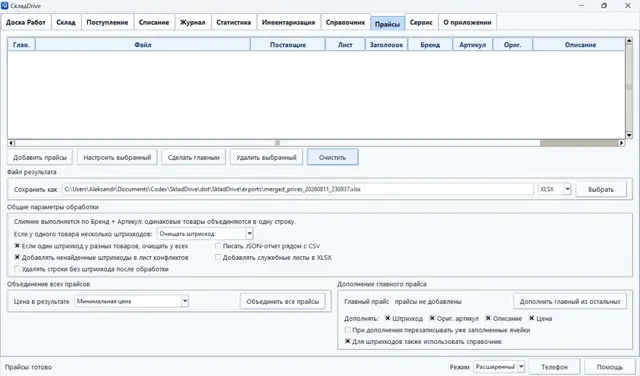
Добавление, настройка и объединение прайсов поставщиков в один результат.
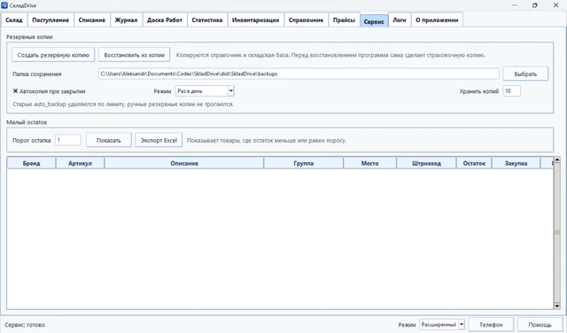
Резервные копии, восстановление, контроль малого остатка и экспорт данных.
Файлы для загрузки
Архив portable-версии программы для простого учета склада, запчастей, работ и сервисных операций доступен через OneDrive.
Скачать программуПошаговое руководство по запуску программы, загрузке справочника, работе со сканером, складом и доской работ.
Открыть инструкциюИстория обновлений, исправлений и новых функций программы.
Открыть журналПросто установить программу и сразу сканировать все подряд не получится, как и в любой другой подобной программе: для работы со штрихкодами нужна наработанная база запчастей. Для быстрого старта в архиве с программой есть подготовленный справочник запчастей, частично со штрихкодами. Если сканера пока нет, можно начать с поиска по артикулу.
Как использовать
Запустите файл SkladDrive.exe и можно приступать к работе.
Откройте раздел “Справочник” и загрузите подготовленный справочник из архива программы.
Принимайте детали, списывайте доступные позиции и держите остатки под контролем без лишней бухгалтерии.
Создавайте записи на доске работ, отмечайте статусы и контролируйте выполненные заявки.
Системные требования
Импорт справочника на процессоре AMD Ryzen AI 5 340 + ОЗУ 16 ГБ: 11 млн строк около 8 мин. Размер справочника barcodes.sqlite после загрузки: около 9.5 ГБ. Объединение 30 прайсов: примерно 6 млн. строк меньше чем за минуту.
Для базы 9.5 ГБ лучше держать запас не меньше 30 ГБ: временные файлы SQLite, отчеты импорта, CSV/XLSX, резервные копии и архивы portable-сборки тоже занимают место.
Для очень больших выгрузок лучше использовать CSV. Лимит для XLSX всего около 1 048 576 строк на лист, поэтому базы на миллионы строк в один Excel-лист нормально не помещаются. Для просмотра больших CSV-выгрузок лучше использовать Notepad++.
Возможности
Контакты